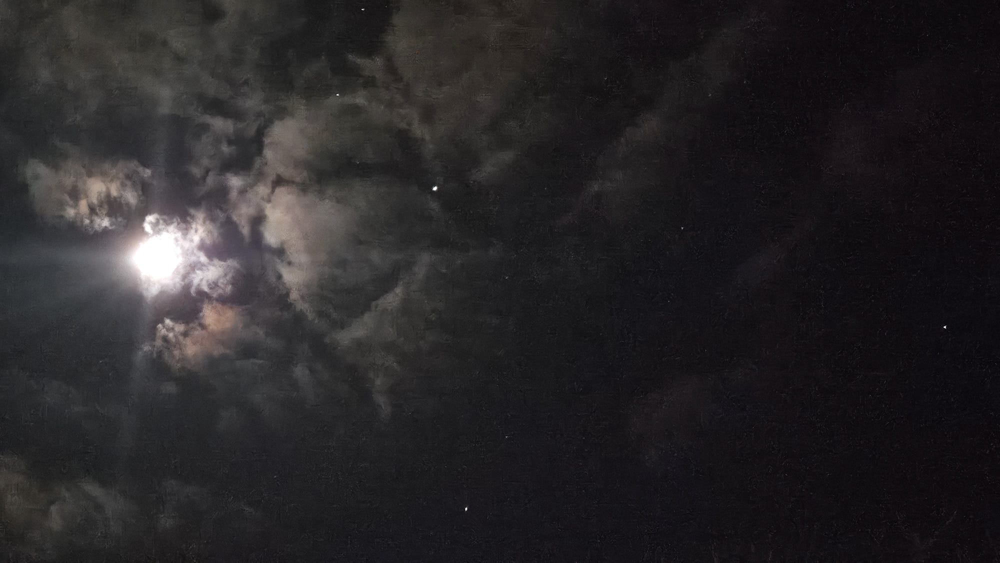
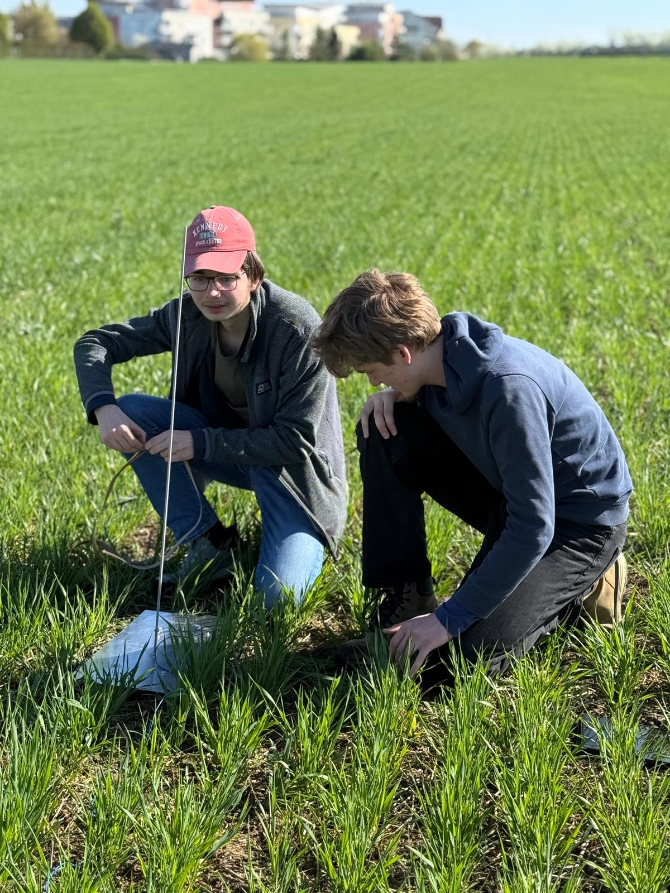
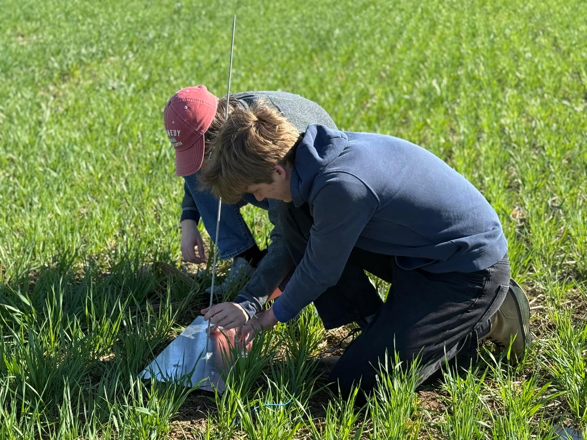

My jsme Altura
Jsme Altura Aerospace – studentský tým, který se nebojí špinavých rukou od paliva ani hodin strávených u simulací. Naším cílem je vyvíjet, stavět a testovat vlastní rakety a technologie, které nám umožní sbírat cenná data z atmosféry. Věříme, že aerospace není jen pro vyvolené, ale pro každého, kdo má chuť se učit, konstruovat a posouvat své hranice směrem k obloze.
Sociální sítě
Sledujte naši cestu vzhůru
Aktuální fotky z dílny, záběry z testování a nejnovější milníky sdílíme pravidelně na našem Instagramu.
@altura_aerospace